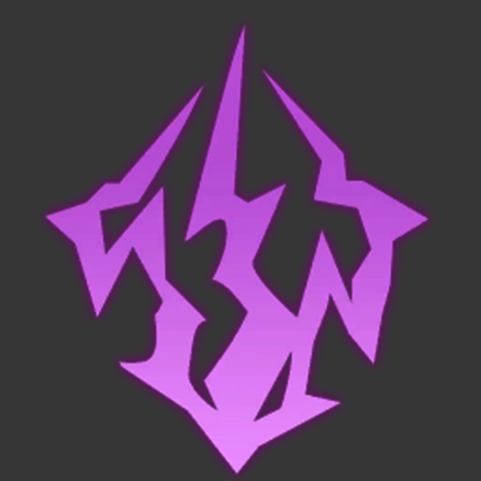

Jing Yuan, Arbiter-Generals of the Xianzhou Alliance's Cloud Knights was one of the Xianzhou Luofu's Six Charioteers. He formerly decimated battlefields, but now he is concerned about the state and future of the Luofu.
|
JING YUAN |

LIGHTNING |
ERUDITION |
5-STAR |
Jing Yuan may provide a lot of value to players seeking for a strong Lightning DPS carry. He can fill in for any vacancies in Memory of Chaos, and with Elation blessings, he can be highly fulfilling to utilize in the Simulated Universe. Jing Yuan also works well with Harmony characters because each benefit he receives directly affects the Lightning Lord's damage output. Also, while his Eidolons are all quite powerful, they are not required to make him an effective unit.
Jing Yuan offers Strong AOE and ST Damage potential, lightning DMG is required in many combat encounters his full potential synergies with CRIT-based builds and team-comps, Jing Yuan also provides an extra "teammate" via the Lightning Lord Although Jing Yuan has a lot of strengths to offer, Jing Yuan also has weaknesses such as his ST damage outclassed by dedicated Hunt/Nihility characters, Jing Yuan's Ultimate is Costly compared to others, and he is somewhat Light Cone-dependent.
One important thing: Jing Yuan may have good DPS against single targets, but he will still pale in comparison to other Lightning damage dealers who actually specialize in melting bosses.